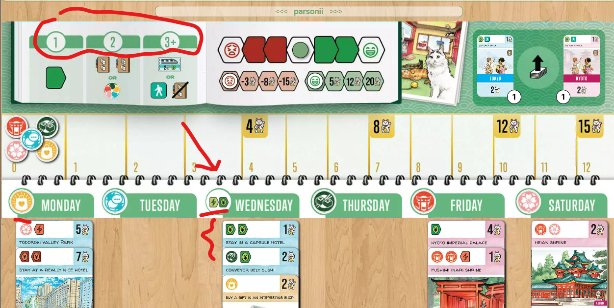
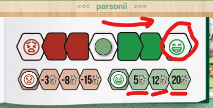
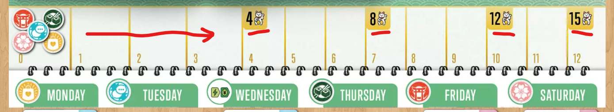

Letsgotojapan
Board Game Arena 官方规则文档
Objective
You are planning a 6-day (Mon - Sat) trip to Japan.
The objective is to go around Tokyo (blue cards) and Kyoto (pink cards) and collect symbols on top of the cards for scoring.
Card Anatomy
Symbols on the upper left of each card get added to your collection.
You score the VPs on the upper right of the card.
Additionally - you score what's on the lower right of the card if you meet the condition on the lower left of the VISIBLE card (the one on TOP)
Game Play
Each turn you will get to choose among 2 or 4 cards (refer to the tracker on the top of the game area for the number of cards you will be picking that turn).
Blue cards represent activities in Tokyo and pink in Kyoto. Yellow cards can be either. You will be asked to pick which city they are at the end of the game before scoring.
As you are only planning, the cards you choose do not need to be placed in any order. You can place them freely on any day and either above or below previously played card. But the maximum is always 3 cards per day.
Players can opt to discard a card and take a Walk instead of placing one of the cards they have to choose from. Players also gain a Research token if they choose to take a Walk.
Key take-away - going back and forth a lot between Tokyo and Kyoto is inefficient and may cost you points at the end.
Favorable Conditions
Day bonuses are evaluated when the third card has been placed on a day. You earn a bonus depending on the number of tokens on the upper left of your cards that are matching that of the day.
1 match - Mood tracker moves one to the right
2 matches - 2 research tokens or 1 wild token. A Research token allows you to draw an extra card during the draw card phase. A Wild token allows you to move an Experience token of your choice 1 space forward during the final round.
3 matches - a Luxury train token or an Extra Walk (no research token with this bonus)

Mood Tracker

Red arrows on cards move the mood tracker to the left and green arrows move the tracker to the right. When the tracker hits the frowny or smiley faces at the end (3 moves each time), you will earn / lose the corresponding VPs on the bottom row.
i.e. Max VPs to gain from happy mood = 20 VPs Max VPs to lose = -15 VPs
The Mood tracker returns to the middle afterwards.
Trains
You will need to place trains at the end of the game whenever you go from Tokyo to Kyoto or vice versa.
All players have 1 Starting Train (0 VP). All regular trains cost -2 VPs. Luxury trains that you gained by matching Favorable Conditions = 2 VPs + 1 green arrow.
Walks
To take a walk = draw a card face down and add to your day. This is the only way to have 4 cards on the same day.
Player chooses whether to draw from Tokyo or Kyoto. Player then decides whether to flip it over at the end of the game and gain the bonuses on the card.
An unflipped Walk card will give you 1 Green arrow, 1 VP, and a Walk icon.
Game End
The game end after 18 cards have been placed -- 3 and only 3 cards per day.
Scoring
1. VPs from the Experience track

Tokens move to the right depending on the number of experience trackers that you have. You earn the highest number of VPs that you have passed.
2. VPs on the upper right hand corners of your cards
3. Visible scoring conditions for each day
4. VPs from the Mood tracks
5. VPs from Research tokens
6. VPs from Trains